Previous: Optimize Your Technique – Part 2 | 🏠 Famous Coaches Home | Next: Hardcourt Confidential Excerpt
Optimize Your Technique – Part 3
Comprehensive unified tennis knowledge base — Fundamentals, Stroke Analysis, Reference Library, and more
Optimize Your Technique – Part 3
By Nick Saviano
In this final excerpt from "Maximum Tennis," Nick Saviano continues his analysis of the true fundamentals of the return, the volley, and the serve.
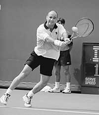
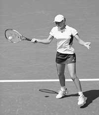
Note the quick turn of the shoulders and compact backswing as Agassi prepares to hit a backhand return and Hingis hits a forehand return.
Improving your return technique will pay big dividends. Here are a few of the keys to hitting returns well. These points are applicable to both forehand and backhand returns.
Split step. Start your split step right before your opponent strikes the ball. Focus on when contact is made to track the ball. Front shoulder. Think in terms of a quick turn of your front shoulder to rotate your upper body. Technically, other things will be happening, but you don't need to worry about them. A quick loading of the upper body will enable you to take a short backswing yet still generate power on your return.
Compact backswing. Often this will happen naturally if you get a quick turn of your front shoulder. The harder the serve, the smaller the backswing.
Footwork. Your objective is to hit the ball in your optimum hitting zone by moving your feet. Try to keep your feet underneath you, as opposed to stretching for the ball. If you attempt to use your feet to get to the ball without reaching, you will move your feet more quickly and stay on balance. If the ball is far away or coming quickly, you will automatically stretch out to reach for it. The idea is that you don't want to reach for the ball unless absolutely necessary.
Swing. If you take the serve early, you should feel like you are swinging through the flight of the ball, as opposed to swinging up (even though you will technically be swinging from low to high). There is less upward action on your swing because the ball is bouncing upward quickly from the ground.
Andre Agassi thinks only about keeping the racquet close to his body and turn his shoulders.
I was at the practice courts at the All England Club during the first week of the 2001 Wimbledon championships, when Andre Agassi came up and sat right by me as he was waiting for his practice court.
We started chatting, and I took the opportunity to show him an article on return of serve that I had written in the USTA High Performance Coaching Newsletter which goes out to 25,000 coaches. The article featured a set of sequence pictures of Andre hitting a backhand return.
After studying the pictures, his response stood out in my mind. He said, “Nick, I don’t even think about taking the racquet back. All I think about is keeping the racquet in close to my body and turning my shoulders . . . the technique has got to be simple!
Considering that he has one of the greatest returns of all time, I thought I would share that bit of advice with you.
Volleys
The secret to great technique on the volley is simplicity. Most important is the ability to move to the ball, on balance, with a minimal backswing and the ability to control the racquet face at impact. The more moving parts and the bigger the swing on the volley, the harder it is to master the stroke. Unlike on ground strokes, there is not as much variation in technique on the volley among the top professionals.
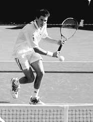
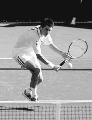
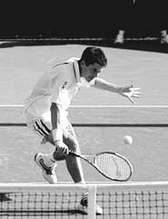
Tim Henman prepares to hit a backhand volley.
Prepare your racquet first and then move. When you are setting up for the volley, think in terms of preparing your racquet first and then moving to the ball. In fact, you will be moving and preparing the racquet at the same time. However, lining up your racquet early gives a clear gauge as to exactly where you need to move to get in the best position for the shot. Too many players see the ball, start to move toward it, and then try to prepare their racquet. The result is poor body position in relation to the ball and trouble preparing the racquet in time.
Maintain good posture. Throughout the preparation and hitting phases, keep your shoulders and back relatively straight.
Keep your elbow bent. As you prepare your racquet for the volley, make sure your elbow is bent. You should never have a straight arm in the preparation phase of the volley.
Hold the racquet head above your wrist. As you prepare for the volley, your racquet head generally will start well above your wrist, with the racquet face slightly open.
Turn your upper body on the backhand. Do not start a backhand volley with your whole body turned sideways. Facing the ball, rotate your upper body as you prepare, getting a pull in the shoulders for the strength you need on the shot, then step. This will help load the large-muscle groups of your upper body.
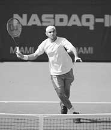
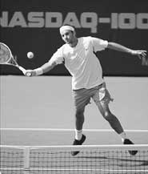
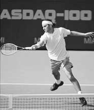
Roger Federer executes a forehand volley. Federer displays beautiful, simple technique.
Keep your elbow out on the forehand. Keep your elbow bent and slightly out in front of your body as you prepare for a forehand volley.
Use a compact swing. Yes, the pros often take a big swing at the ball, but every great volleyer can execute either the forehand or the backhand with minimal backswing and follow-through.
Control the racquet face before and after the hit. If you can control the racquet face before and slightly after the hit (if you control it before and after the hit, it means you have maintained control on contact), then you have a great chance of consistently hitting the volley well.
With this in mind, in the preparation phase, attempt to line up the racquet face directly behind the flight of the oncoming ball. In reality, you might be slightly higher than the oncoming ball, depending on the shot, but the key is to line it up quickly and not turn the racquet face away from the oncoming ball. Then focus on keeping the face of your racquet facing the direction of your target after you make contact, and hold this for a split second.
This will help to keep your racquet face pointed in the right direction throughout the hitting zone. It will also help minimize the size of your backswing and follow-through. All great volleyers can do this at will. So, don’t be confused when you see some of the pros taking a big swing or flipping their racquet head around on the follow-through.
Rusedski demonstrates the two basic principles: keeping racquet work simple and being aggressive with the feet.
Many years ago (I must have been 14) at the Berkley Tennis Club, they held a big professional men’s event. My idol Rod Laver, two-time Grand Slam winner, was competing in the event. So, I went to the tournament three days in a row to watch him play. I wanted to find some time when I could ask him about his technique on the volley, but it was impossible to get near him when he was at the courts.
However, I noticed that he would actually walk to the courts from his hotel, which was close to the tennis club. So on Friday, before his quarterfinal match, I got to the club early and waited outside so that I could “intercept” him on the street as he was walking to the courts. As he approached, I got really nervous. But I managed to spit it out. “Mr. Laver, can I ask you a quick question?” “Go head if you keep walking,” he said. “I am trying to improve my volleys. Is there anything you can tell me that might help?”
He held his racquet up as if he were going to hit a forehand volley and said, “Keep the racquet work simple, and be aggressive with your feet. That is when I volley my best.” At first I didn’t fully understand, but I never forgot what he said. As I practiced my volley and improved it over the years, it became more and more clear how right he was. To this day, the concept of simple racquet technique with good movement to the ball is part of my technical philosophy on the volley.
About 25 years later, I had the privilege of riding with Rod in the courtesy car at the U.S. Open. I mentioned the story to him. He remembered the tournament but not the young boy asking him about the volley. The important thing is I didn’t forget!
From the age of 12 Greg Rusedski followed my advice for developing and practicing his serve.
Serve
The serve is the most important shot in the game. Every point starts with it, and it is the only shot in tennis in which you have total control over how you execute it. To say you should practice first and second serves is an understatement!
I could write an entire chapter on technique for the serve. Short of doing that, I have selected a few of the most important points on technique. Once again, if you improve any one of the following items, you will help your serve significantly.
Relax. The serve is liquid power. In particular, make sure there is little tension in your face or racquet arm.
Balance. Be balanced at the start.
Front toe. Start with your front foot turned to the side (at least a 30 percent angle from the net), or it should turn as you rotate your shoulders. If your toe points directly toward the net, your ability to turn your hips and shoulders will be limited.
Tossing arm. Toss the ball with your arm to the side of your body, approximately at a 45-degree angle, as opposed to straight out in front of you. This will create a natural rotation of your shoulders without thinking about it.
Toss location. The location of the toss will vary from player to player according to her style. However, the toss should be slightly out in front of your body and directly above your hitting shoulder. On spin serves, it usually will be tossed a few inches over your head.
Toss height. The height of your toss should be slightly higher than where you would contact the ball at full extension. A low toss will limit your power and service percentage.
Shoulders. As you toss the ball up, you should rotate your shoulders and start to bend your knees. Rotating your shoulders at the start, along with having your tossing arm to the side of your body and your toe pointed to the side, will naturally cause a slight rotation in your hips without thinking about it.
Power position. If you can get into a good power position right before exploding up, then your chances of having a good serve are excellent. The power position for the serve is when your body is fully loaded (storing of energy) in your shoulders, hips, and knees right before exploding up. Your shoulders are rotated and tilted, your hips are rotated and forward, and your knees are bent. Most club players don’t get into this position. However, just a mental picture of it will help your serve.
Head up. Keep your head up through contact with the ball.
Vertical explosion. Think of the serve as a vertical explosion, and feel like you are exploding up into the shot.
Breathe out. Breathe out on the hit. It creates tension and a loss of power when you hold your breath on the hit.
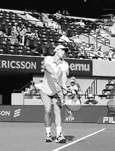
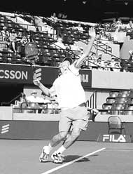
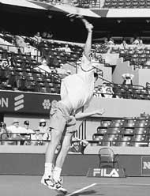
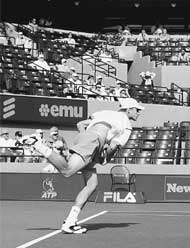
Andy Roddick’s powerful serve.
“Practice your serve every day and use targets. Remember, it’s the most important shot in the game.” I have said that literally thousands of times to young, aspiring players. But only a few really follow that advice. Greg Rusedski was one of the few who took my advice to heart.
He used to fly down from Canada to work with me when he was 12 to 14 years old. “I want to be a serve and volleyer,” he would say. The only thing was he was very small, and although he had developed a nice service action, I didn’t think it would amount to a really significant shot. Nevertheless, he would practice it every day.
Then when I took the national coaching job with the U.S. Tennis Association, I could no longer work with players from other countries. So, Greg stopped coming to my house. But we remained friends, and I would continue to see him from time to time at the top international junior events, playing matches or out on the practice courts. Each time I would see him, two things stood out. He was bigger and stronger, and his serve was getting bigger and better.
I noticed that at all his practice sessions he finished the session by hitting a basket of serves with targets. Eventually, he turned professional and moved to England and started rapidly moving up the rankings, with a serve rated as one of the best in the game--clocked at more than 140 miles per hour--and a fine volley to back it up.
Finally, a few years ago, as I watched him play, I marveled at the power and accuracy of 6’4" Greg Rusedski, serving and volleying his way to the finals of the U.S. Open and a top-five world ranking. Sometimes it pays to listen, and it definitely pays to practice your serve!
Conclusion
As I hope you have discovered from these articles, the secret to developing and mastering optimum technique is truly rooted in the fundamentals. As you begin to optimize your technique, don’t try to work on a lot of different things at once. Check with a local certified USPTA or PTR professional, and choose one or possibly two things to focus on in an area that needs improving. If you keep it simple, focus your efforts on mastering fundamentals, and let your natural personality and style come through, you will be on your way to major improvements in your technique in particular and your game in general.
Post Script: The Future of Coaching
A few years ago, I spoke at an international coaching workshop in Casablanca. There were 300 top developmental coaches from 70 countries in attendance. During my talk the audience became extremely quiet when I said: “If you are teaching your players to imitate the techniques of the top players in the game, you are teaching them to be a generation behind the next wave of champions.”I immediately had everyone’s attention.
I explained that high-performance coaches should not focus on hitting style but on the true mechanical fundamentals of technique. The true fundamentals are generally the commonalities in technique and movement that virtually all great players execute. In addition, during practice, the (coaches) must simulate the demands their players will encounter at the world-class level.
This will allow the players’ technical fundamentals to be honed to adapt to the every-changing demands of the game, while their style of hitting evolves naturally in accordance with their personality and physical attributes. This combination creates optimum technique.I continued by saying that the game is evolving constantly. Players from one generation do not have the same technique as those of the past.
Just look at the progression of male world champions from Jimmy Connors and Bjorn Bjorg of the 1970s; to John McEnroe, Boris Becker, and Stefan Edberg in the 1980s: to to Jim Courier, Pete Sampras, and Andre Agassi in the 1990s. the same is true for women, with Billie Jean King to Chris Evert; to Martina Navratilova: to to Steffi Graf: to Monica Seles; to Martina Hingis, Lindsay Davenport, and Venus and Serena Williams today.
As a coach, I don’t want to limit players to antiquated techniques and hitting styles that do not allow them to develop to their full potential. So, if you want to develop the next great champion, remember, that player will probably look different—technically speaking—from the champions of today.

In Maximum Tennis, Nick Saviano outlines the 10 characteristics that top players have in common and shows you how to develop them for yourself. Reading Nick's critically acclaimed book you will learn to: Play from the heart. Simplify your strokes. Focus on the elements you can control. Play to your personal strengths. And much more. Drawing on his experience as a player, educator and coach Nick describes the developmental processes followed by the world's top players. In clear concise language, he outlines the concepts any player can learn--and every coach can teach--to help you reach your full potential and enhance your love of the game.Click Here to Order!

Nick Saviano is one of the world's leading developmental coaches and the founder and director of Saviano High Performance Tennis Academy, located in Davie, Florida. A former elite American junior player and a two time All-American at Stanford, Nick played on the professional tour for a decade, was ranked in the top 50 in singles, and had wins over numerous world top 10 players. He is also the former director of men's coaching and coaching education for the USTA. Nick has headlined as a presenter at coaching conventions throughout the world and his critically acclaimed book "Maximum Tennis: 10 Keys to Unleashing Your On-Court Potential" is a best selling instructional title.
Click Here for more information on training with Nick Saviano.
Source: tennisplayer.net archive — Optimize Your Technique – Part 3.docx (John Yandell teaching library, 2002-2022). Extracted and rendered as HTML for Tennis Future Lab.